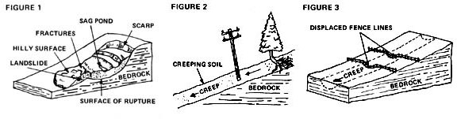

Vern Cope's article, "Living on a Slope" (MOTHER NO. 29, page 42), was a good one ... but it did set me to thinking about the hazards of building on such a plot. Near where I live in Denver, for instance, $75,000 houses are currently sliding off mountains on their way to parts unknown. Before you run off, buy a "bargain" piece of hillside, and start constructing the home of your dreams on it, then, you should know how to determine whether or not that slanted acreage is suitable for the use to which you intend to put it.
Any hillside suffers a form of erosion known as mass wasting . This movement can take either the form of a violent landslide (which, obviously, can be catastrophic) or a slow creep (which, over a longer period of time and not so obviously, can be just as catastrophic). You should learn to recognize the evidence left behind by both kinds of land movement and to predict the probability of such movements in the future.
Landslides that have already happened come in two varieties: old and fresh. And you should run-not walk-from any real estate agent who shows you either type. Anyone who builds on a known landslide (old or new) is asking for trouble. The added weight of a house and the addition of water (on the lawn, on a garden, in a sewage disposal system, etc.) can reactivate even a long-dormant landslide with disastrous results. And there you'll go to the bottom of the hill, with your new home in splinters around you!
Fig.1 shows a typical landslide and its most recognizable scars. Whether fresh or hundreds of years old, any slide you inspect should exhibit some or all of these characteristics:
[A] SCARP. This is a cut in a hillside where a mass of earth once pulled out of the slope. On a fresh slide, the scarp will have the appearance of a recent excavation. On an older one, the cut may appear to be nothing but an innocent, shallow, rounded depression on the side of the hill. Beware. Such a depression is sometimes not as innocent as it first looks.
[B] SAG PONDS. Water tends to accumulate in the depressions formed on the surface of a landslide. This is most evident where the slide meets the base of the scarp.
[C] FRACTURES. As a mass of earth slides down a slope, its surface is often ruptured into numerous cracks and fissures.
[D] HILLY SURFACE. When a landslide comes to rest, it slumps and-to varying degrees-is compacted. This creates a hilly area that is often in marked contrast to the surrounding, undisturbed portions of the slope.
[E] VEGETATION. The surface of any landslide-new or old-usually differs a great deal (especially around the bottom of the shifted mass of earth) from the topsoil of adjacent, undisturbed portions of the hillside. And this "new" surface (formerly subsoil) frequently supports a community of plants that is noticeably different from the vegetation growing on the surrounding slope. In short, a lobe-shaped area of low shrubs, brush, and smaller trees amongst a hillside of older and taller trees might very well be all the "sign" you need to tell you that a landslide has taken place sometime in the past. Be alert for such clues.
Unlike landslides, which let you know in a most dramatic way when they move, the downslope creep of the earth and rocks on a hillside is just what the name implies . . . slow, deceptive, and insidious. Once started, it's also inexorable . . . and anyone who tries to pit the foundation of a house against the gradual slide of thousands of tons of soil is very foolish indeed.
It's much more difficult to detect a creeping slope than it is to spot an old or a new landslide . . . but it can be done. Look for these signs:
[A] TREES WITH BENT TRUNKS. As soil inches down a hillside, the top layers of the dirt will generally move faster than lower layers of the shifting mass of earth. This can cause trees growing in the creep to be deformed as shown in Fig. 2.
[B] TILTED POLES. The same action that bends tree trunks on a creeping slope can also force telephone and other utility poles to increasingly lean downhill (see Fig. 2).
[C] DISPLACED FENCE LINES. Fig. 3 shows what happens when a fence is run across a creep zone. The section of posts and wire within the moving mass of earth will-over a period of time-"walk" right down the hill with the sliding soil. It's quite easy to see the resulting "sag" in the fenceline.
Although the whole planet is plastic and its mass is constantly changing, most of these changes take place so slowly that-for all practical purposes-we can ignore them. A great many hillsides and mountain slopes, for example (although constantly and forever pulled downward by gravity), erode at such an imperceptible pace that their gradual wearing away need not concern us. We can lay foundations on their slopes and construct buildings on their faces with little more thought and skill than if we were erecting the same structures on level land.
If, for some reason, you do want to put up a building or establish a homestead on a mountainside or steep hill, however, you're wise to positively acquaint yourself with the signs of troublesome mass wasting first ... before you make even the down payment on your 'dream" patch of slanted soil. The shifting of millions of tons of earth-in the form of either a sudden landslide or a slow creep-is more than a match for anything you're liable to build plus any effort that you, your family, your dog, and your mule-all together-are likely to muster. Ignore the early warnings of mass wasting and you endanger yourself, your whole homestead, and even some of your downslope neighbors.
|
 |
|
|